In this project, I implemented several fundamental algorithms for working with Bezier curves, surfaces, and triangle meshes using a half edge. I used de Casteljau's algorithm for evaluating Bezier curves and surfaces. And then implemented mesh processing algorithms such as edge flipping, splitting, and loop subdivision. These allow for smoother surfaces and more refined mesh structures.
Section I: Bezier Curves and Surfaces
Part 1: Bezier curves with 1D de Casteljau subdivision
Bezier curves are smooth curves defined by a set of control points. The de Casteljau subdivision algorithm evaluates a point on a Bezier curve using repeated linear interpolation between adjacent control points. At each step, a new set of intermediate points is computed, and this process continues until only one point remains. This final point lies on the Bezier curve at the given parameter t.
I implemented evaluateStep, which loops through the points and calculates p = (1 - t) * points[i] + t * points[i + 1]. These interpolated points are stored in a new vector representing the next subdivision level. Repeating this process eventually reduces the control points to a single point, which is the evaluated point on the Bezier curve.
Here is an example of 1d de Casteljau subdivision on a 6 control point Bezier curve.
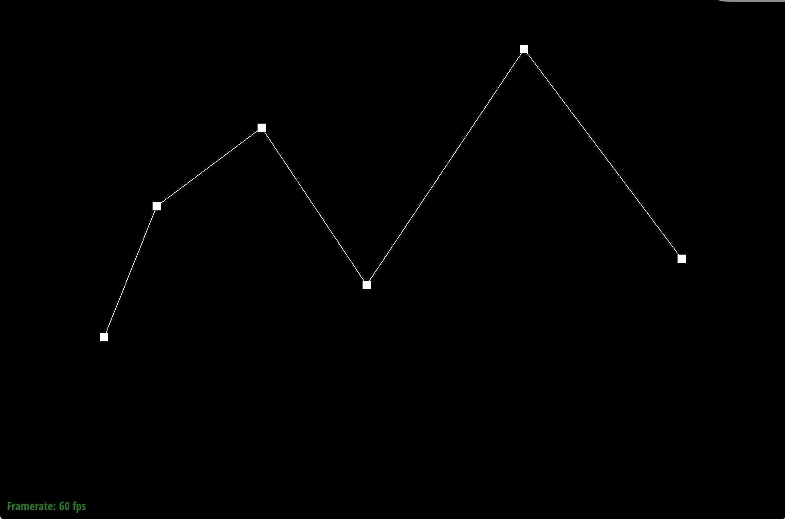
Original curve
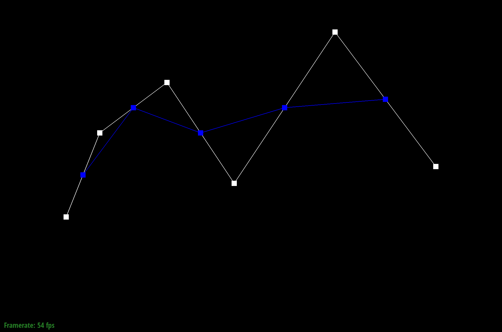
Step 1
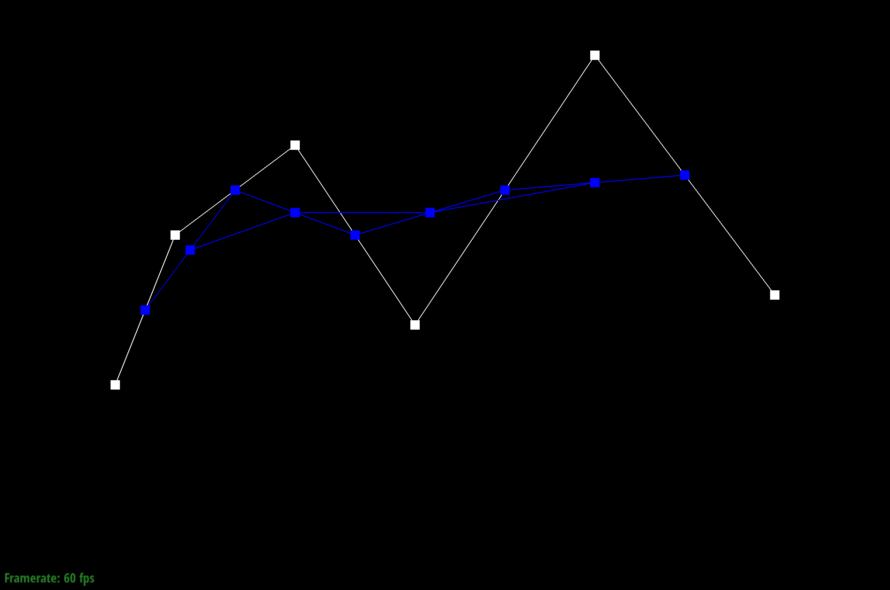
Step 2
Step 3
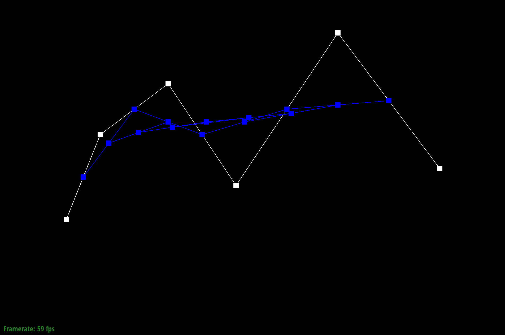
Step 4
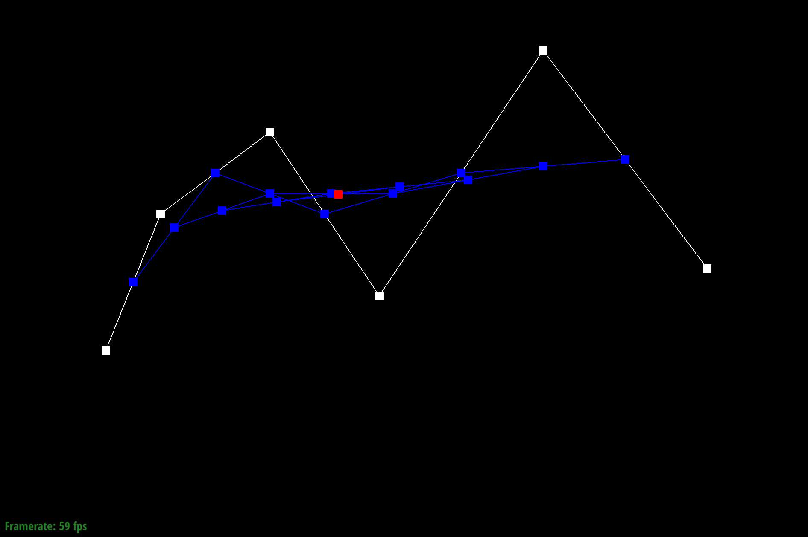
Step 5
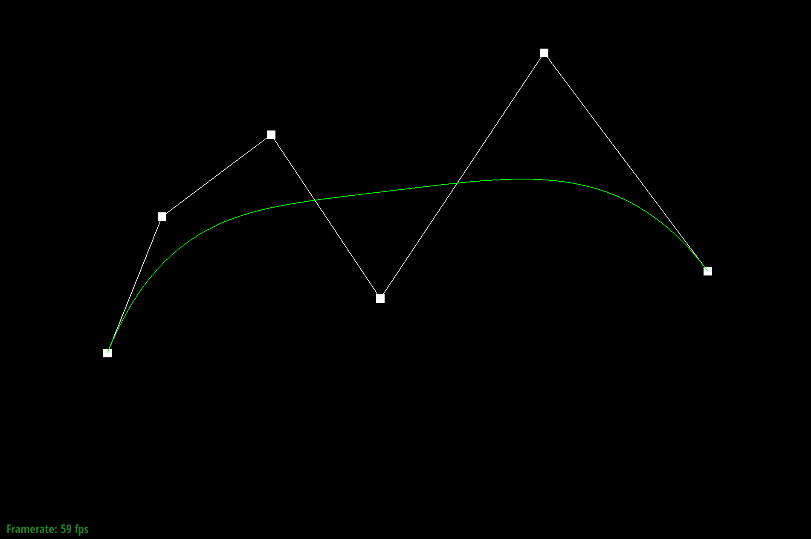
Completed Bezier Curve
Scrolling along the curve
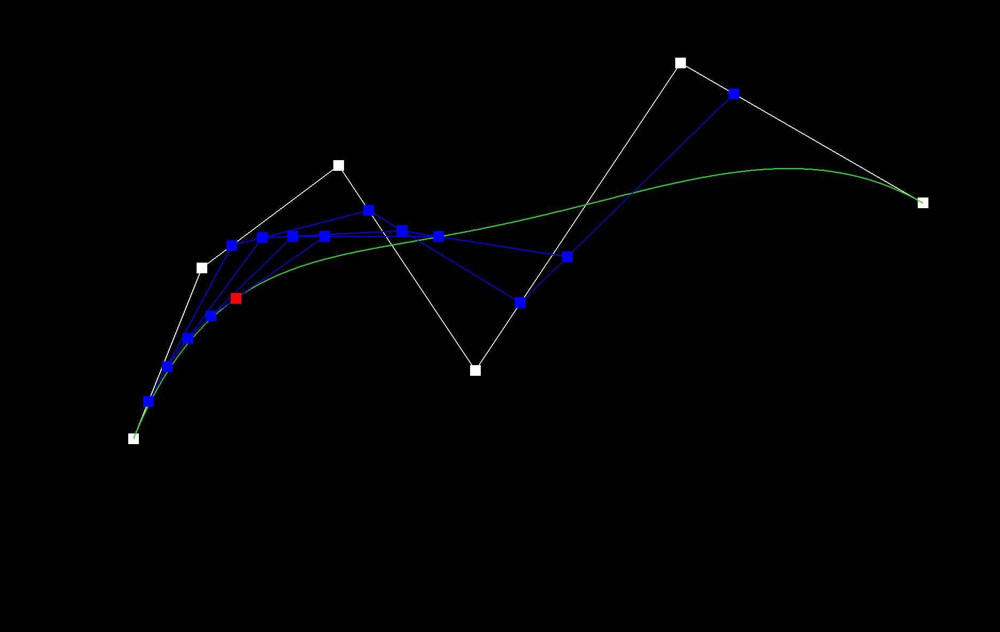
Original Bezier Curve
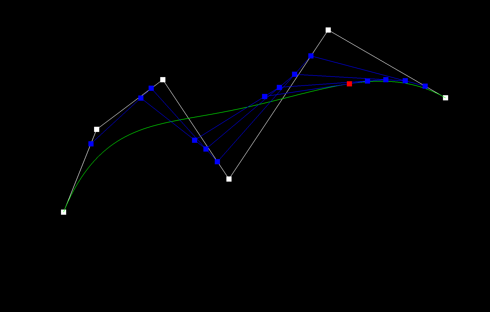
Bezier Curve with modified t
Part 2: Bezier surfaces with separable 1D de Casteljau
To evaluate a Bezier surface, I extended de Casteljau’s algorithm from curves to a 2D grid of control points. First, I evaluate each row of control points as a Bezier curve using parameter u. This produces one point per row. Then I treat those points as a new Bezier curve and evaluate them using parameter v to get the final point on the surface.
In my implementation, evaluateStep performs one interpolation step between adjacent control points, evaluate1D repeatedly applies this step until only one point remains, and evaluate first evaluates rows with u and then evaluates the resulting points with v.
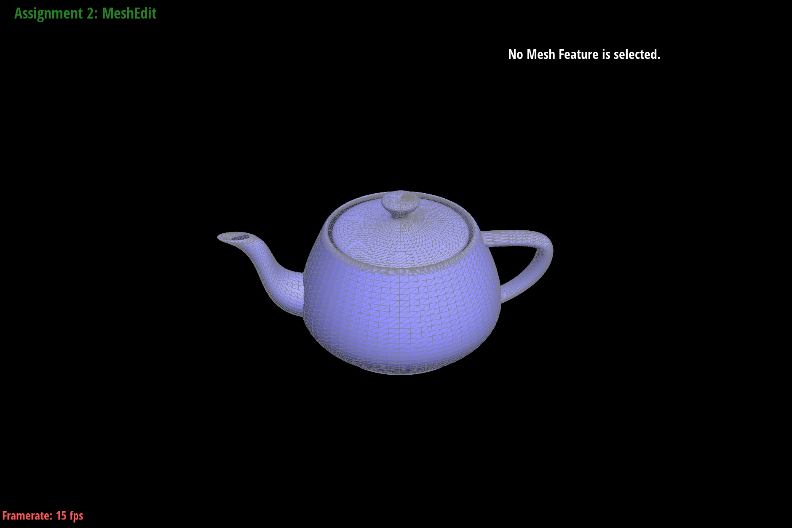
Bezier surface Teapot
Section II: Triangle Meshes and Half-Edge Data Structure
Part 3: Area-weighted vertex normals
To compute the normal at a vertex, I loop through all triangles connected to that vertex using the half-edge structure. For each triangle, I compute its normal using the cross product of two edges. I add these normals together and then normalize the result to get the final vertex normal.
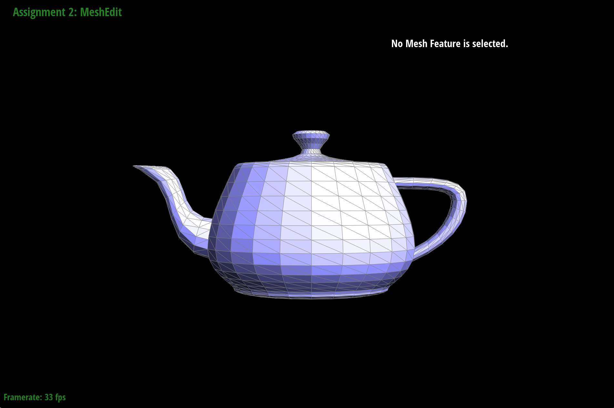
Teapot rendered with Flat shading
Teapot rendered with area-weighted vertex normals
Part 4: Edge flip
I implemented edge flip by first checking whether the selected edge is a boundary edge, and if so, I returned without changing anything. Otherwise, I collected the two adjacent triangles and all related halfedges, vertices, edges, and faces, then reassigned their pointers to match the flipped connectivity. I found it helpful to draw the two triangles before and after the flip and label every halfedge, vertex, edge, and face so I could update all pointers carefully.
Original Teapot
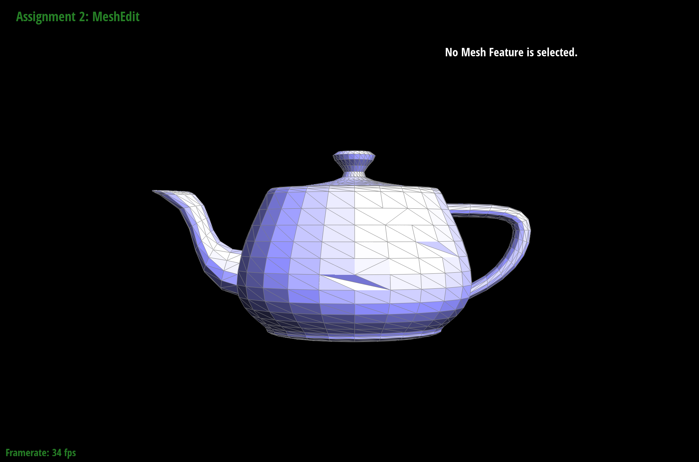
Teapot with some edges flipped
Part 5: Edge split
To split an edge, I first check that the edge is not on the boundary. I then create a new vertex at the midpoint of the edge and connect it to the surrounding vertices to form four smaller triangles. Finally, I update the halfedge pointers so the mesh connectivity is correct.
Original Teapot
Teapot with some edge splits
Teapot with edge splits and flips
Part 6: Loop subdivision for mesh upsampling
I implemented Loop subdivision by first computing new positions for all vertices and edge midpoints using the Loop weighting rules. I then split every original edge and flipped edges that connect an old vertex to a new vertex. Finally, I updated all vertex positions using the precomputed values to create a smoother mesh.